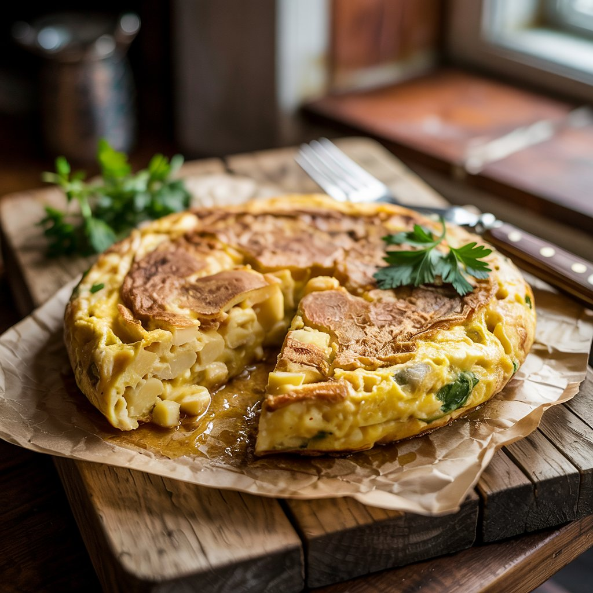

Tortilla de Patatas

Ingredientes:
- 5-6 patatas medianas
- 1 cebolla (opcional, pero recomendada)
- 6 huevos
- Aceite de oliva virgen extra
- Sal al gusto
Preparación:
- Pela las patatas y córtalas en rodajas finas o en cubos pequeños, según prefieras.
- Pela y pica la cebolla en julianas finas (si decides usarla).
- En una sartén grande, calienta abundante aceite de oliva y fríe las patatas junto con la cebolla a fuego medio hasta que estén blandas, pero sin llegar a dorarse demasiado. Escúrrelas bien.
- En un bol grande, bate los huevos y añade sal al gusto. Incorpora las patatas y la cebolla escurridas y mezcla bien.
- Vierte la mezcla en una sartén antiadherente con un poco de aceite caliente. Cocina a fuego medio-bajo durante unos minutos hasta que cuaje por un lado.
- Con ayuda de un plato grande o una tapa, da la vuelta a la tortilla y cocínala por el otro lado unos minutos más, hasta que quede dorada por fuera y jugosa por dentro.
- Sirve caliente o fría, ¡a gusto del comensal!